From Hypertension to Dementia
Advancing High-Speed LSCI to extract sensitive microvascular biomarkers and uncover the shared hemodynamic mechanisms that link hypertension to Alzheimer's disease, in clinical and pre-clinical models.
“We investigate altered microvascular dynamics as a key link between cardiometabolic risk factors and dementia, advancing translational optical imaging to uncover novel diagnostic biomarkers and therapeutic targets.”
I / Who we are
The Blood Flow Imaging Group develops and applies novel optical imaging methods to advance the understanding and diagnosis of cardiometabolic and neurovascular disorders.
We work across the full translational chain — from physics and instrument design, through pre-clinical experiments, to imaging in patients — with the conviction that the same optical principles can reveal microvascular health in animals and humans alike.
· The team
As of May 2026, the group is led by the PI Dmitry Postnov and includes two postdocs and three PhD students. Members bring diverse backgrounds, with work spanning pre-clinical experimental biology, clinical imaging, optical engineering and data science — the mix that makes genuinely translational imaging possible.
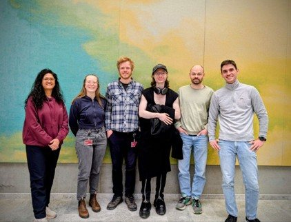
Brain hemodynamics in health, dementia and cardiovascular disorders; pulsatility; vasomotion; dynamic light scattering; hyperspectral imaging.
Vascular physiology, neuroscience, diabetes and hypertension; image segmentation, signal processing, and AI for image analysis and biomarker extraction; optical coherence tomography, ultrasound and photoacoustics.
· Infrastructure we built
Alongside our research, we have established — and now manage and continue to expand — a Translational Optical Imaging Infrastructure: a suite of contrast-agent-free imaging systems available to researchers across Aarhus University and beyond. More detail follows in Section III ↓
II / Key research projects
Across our projects runs a single guiding hypothesis: that cardiometabolic risk factors reshape microvascular dynamics — pulsatility, vasomotion, transit time and neurovascular coupling — and that these altered dynamics act at once as a consequence, a cause and a marker of declining vascular health and brain integrity.
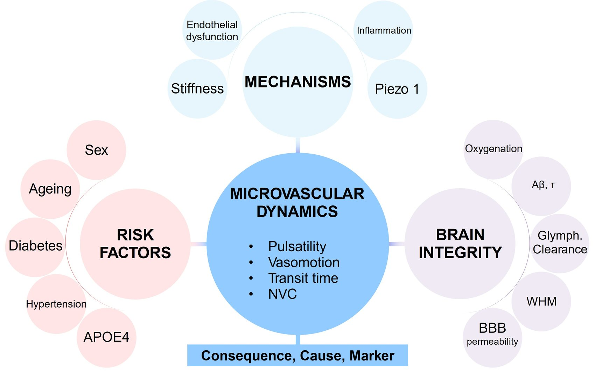
· Active funded projects
Advancing High-Speed LSCI to extract sensitive microvascular biomarkers and uncover the shared hemodynamic mechanisms that link hypertension to Alzheimer's disease, in clinical and pre-clinical models.
Testing how microvascular stiffening of resistance vessels in diabetes disrupts autoregulation and neurovascular coupling, driving the cognitive decline that raises dementia risk.
Advancing a non-invasive multimodal platform for assessing systemic microvascular function through skin perfusion and oxygenation.
Assessing the diagnostic potential of multimodal skin perfusion imaging in coronary and systemic microvascular disease, alongside a randomised trial of anti-inflammatory treatment.
Establishing and validating a new diagnostic component for angina based on non-invasive peripheral perfusion imaging and individualised vascular-response assessment.
III / Translational Optical Imaging Infrastructure
At its core are contrast-agent-free technologies that non-invasively probe perfusion and chromophore dynamics in the brain, retina, skin, and, in principle, any exposed organ. Because the same physics applies in animal models and humans, the infrastructure yields shared biomarkers across species, complemented by wide-field fluorescence microscopy and a planned expansion toward photoacoustic imaging.
It has been assembled entirely with competitive external funding, is available to other researchers at AU, and can also operate as a core facility offering data analysis and interpretation support. A long-term goal is to establish a translational data bank for non-invasive optical imaging modalities to enhance future data-driven research.
Wide-field, label-free imaging of blood-flow dynamics. Coherent light scattered by moving red blood cells forms a fluctuating speckle pattern whose blurring encodes perfusion — mapped continuously across large fields of view, in cortex, retina or skin.
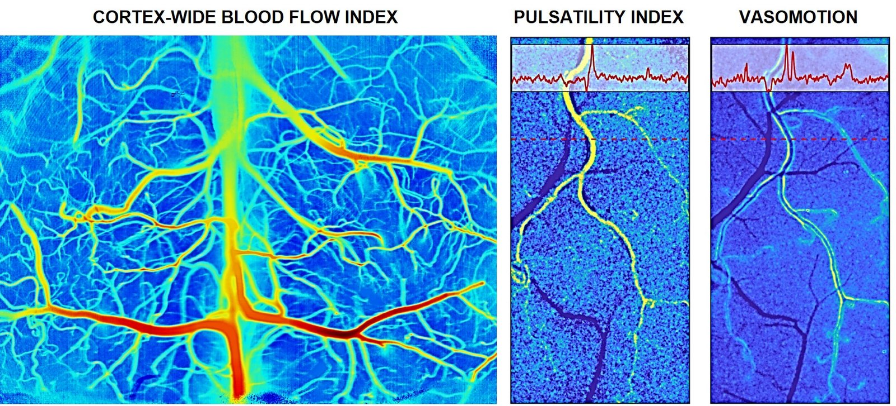
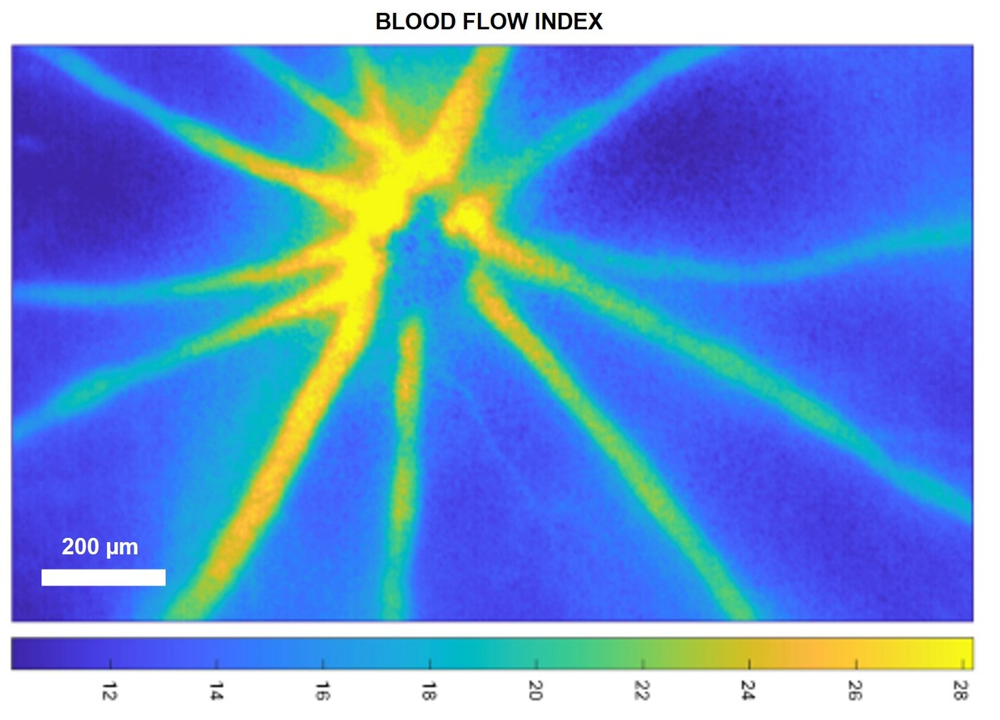
A custom, patented platform combining LSCI and Dynamic Light Scattering Imaging (DLSI), reaching thousands of blood flow index frames per second. It resolves the fast events that conventional imaging averages away — such as pulse wave propagation — across the whole vascular network.
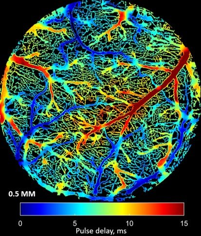
Tracks fluorescent tracers through the microvasculature to quantify transit-time heterogeneity and vasomotion, and to follow glymphatic clearance, blood–brain-barrier permeability and amyloid accumulation in pre-clinical models.
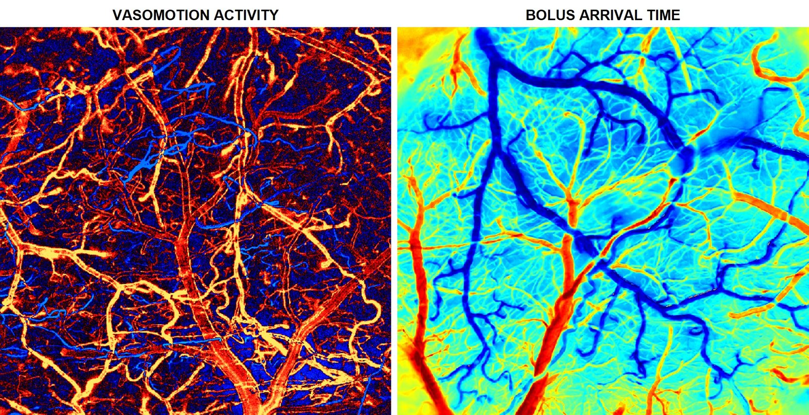
Depth-resolved structural imaging and angiography of microvascular networks at micron-scale resolution, providing the anatomical context for our functional flow measurements.
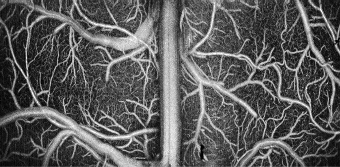
Extends OCT into the visible spectrum to add label-free oxygenation readouts alongside ultrastructure. We operate the first — and currently only — rodent and human retinal visOCT systems in Denmark.
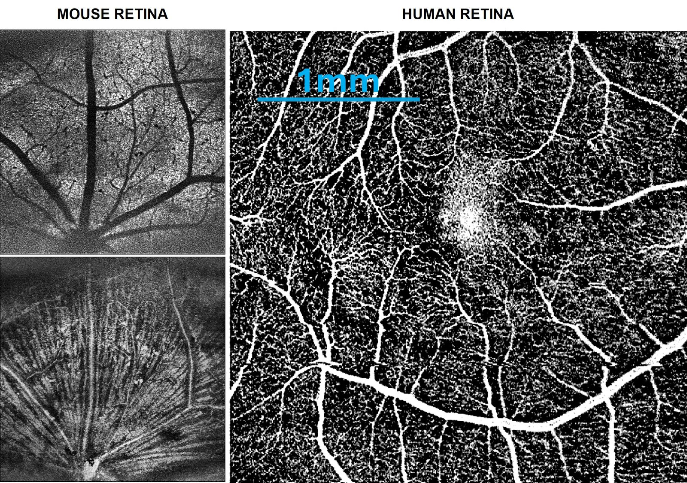
High-speed holographic imaging of the human retina that recovers absolute arterial and venous blood-flow waveforms and pulse-wave velocity within seconds. Now installed for clinical use at AUH Ophthalmology.
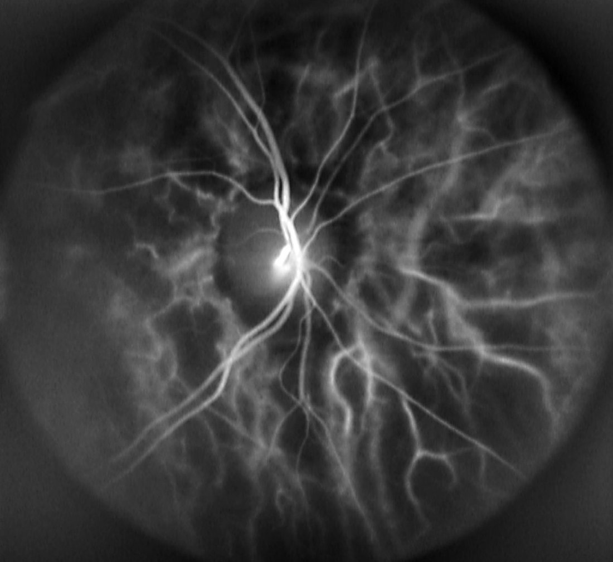
A clinical instrument pairing LSCI with multispectral/hyperspectral imaging to read out skin perfusion and oxygenation, condensing large imaging datasets into interpretable microvascular biomarkers. Deployed across multi-thousand-subject clinical studies at 3 locations across Denmark.
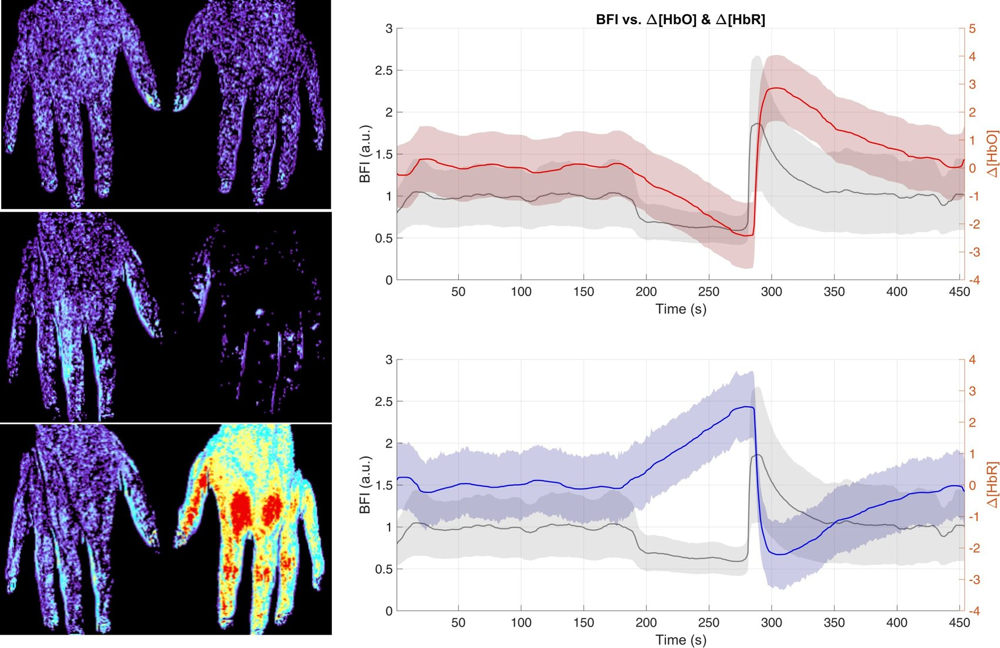
· Funding
Our research and infrastructure are supported by major grants from the Lundbeck Foundation, the Novo Nordisk Foundation, and the Independent Research Fund Denmark.
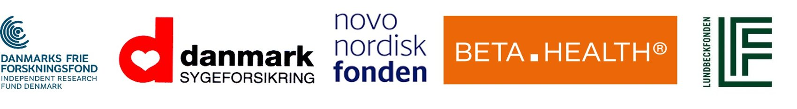
· How to join us
We are always open to collaborations in Denmark and abroad and warmly welcome prospective members who would like to apply for funding to join the lab. If that's you, email dpostnov@cfin.au.dk with your idea and the funding plan — we will support you as much as we can.
Open calls for specific roles are announced whenever the group secures the associated funding.